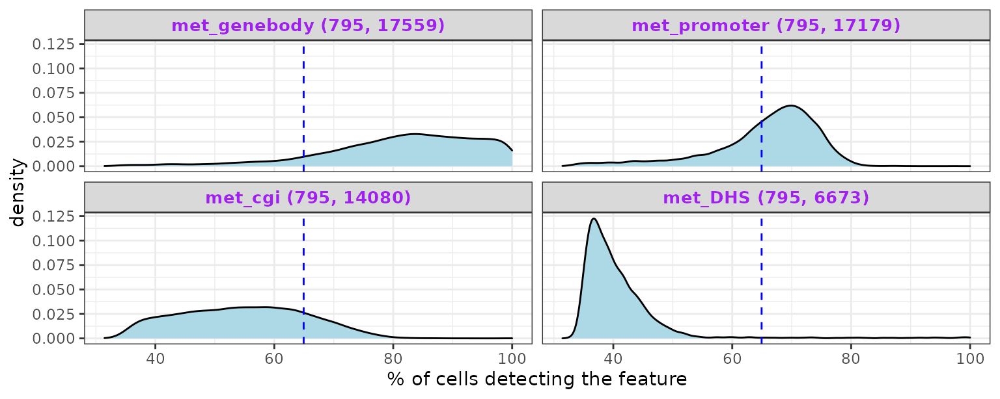
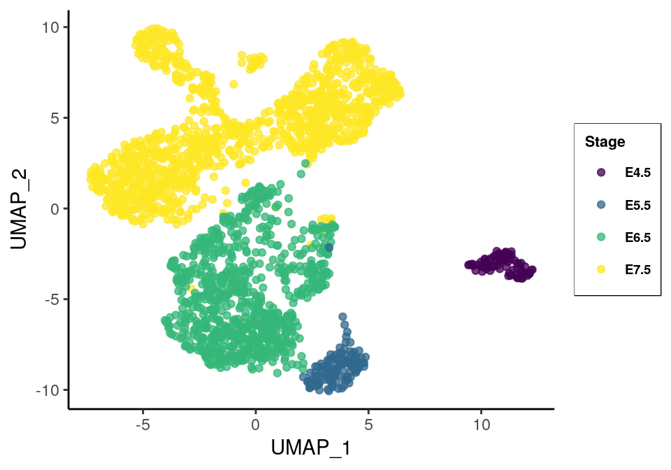
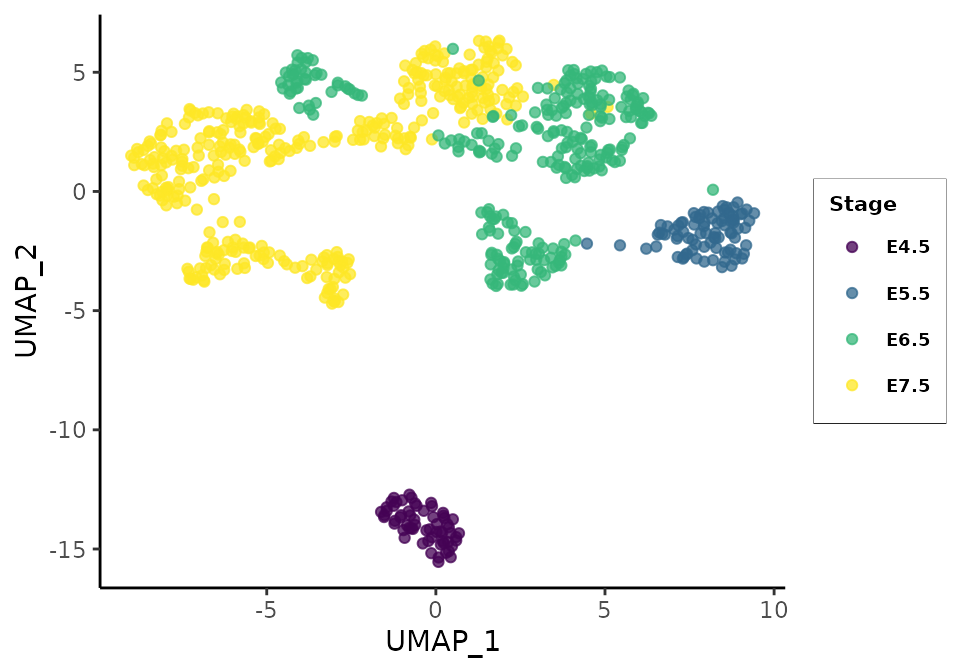
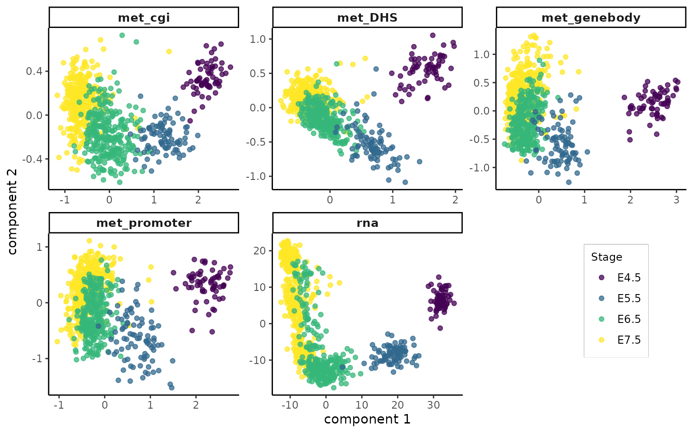

scNMTseq challenge analysis using a PLS-based approach
Al JalalAbadi1
19 May 2021
Source:vignettes/index.Rmd
index.RmdNote: These analyses are different from the ones presented in the hackathon due to updated preprocessing if data in order to harmonize the analyses for publication. For original analyses see https://github.com/ajabadi/scNMT_seq_gastrulation.
Load the required packages:
library(BIRSBIO2020.scNMTseq.PLS)
library(MultiAssayExperiment)
library(scater)
library(scran)
library(mixOmics)
library(ggplot2)
library(magrittr)
library(reshape2)
library(uwot)
library(impute)
library(nipals)
nipals_maxiter <- params$nipals_params['maxiter']
nipals_ncomp <- params$nipals_params['ncomp']
nipals_nhvr <- params$nipals_params['nhvr']Data
Details of the hackathon data and preprocessing steps: https://github.com/BIRSBiointegration/Hackathon/tree/master/scNMT-seq
Load the MultiAssayExperiment object from Cloudstor:
cat('loading data from Cloudstor ...\n')
#> loading data from Cloudstor ...
gastru.mae_path <- url('https://cloudstor.aarnet.edu.au/plus/s/jsW7nh4YwThw8Q5/download')
gastru.mae <- readRDS(gastru.mae_path)Filter MAE object
Keep cells which pass QC metrics and exclude putative extra-embryonic cells as they are starkly different in methylation patterns and will drive most of variation in the relatively small population of matching cells, not allowing to fully explore cell to cell variation intended for the purpose of this hackathon:
## subset RNA expression and DNA methylation modalities
keep_assays <- grep("rna|met",names(assays(gastru.mae)))
#> Warning: Dropping internal assays in 'rna'; taking first one
gastru.mae <- gastru.mae[,,keep_assays]
#> Warning: 'experiments' dropped; see 'metadata'
#> harmonizing input:
#> removing 4403 sampleMap rows not in names(experiments)
## remove putative extraembryonic cells
cat(sprintf('dropping lineages %s, plus the unassigned lineages.\n', paste(params$drop_lineages, collapse = ', ')))
#> dropping lineages Primitive_endoderm, Visceral_endoderm, ExE_ectoderm, plus the unassigned lineages.
filter_cells <- gastru.mae$lineage %in% params$drop_lineages
filter_cells <- filter_cells | is.na(gastru.mae$lineage)
## outlier cell to be filtered
filter_cells <- filter_cells | rownames(colData(gastru.mae)) == 'E6.75_Plate2_H10'
gastru.mae <- gastru.mae[,!filter_cells,]
## keep cells which pass RNA QC
gastru.mae <- gastru.mae[,gastru.mae$pass_rnaQC==TRUE,]
## Keep full rna SCE for UMAP
rna.sce <- gastru.mae@ExperimentList$rna
## keep cells that also pass QC for DNA methylation
gastru.mae <- gastru.mae[,gastru.mae$pass_metQC==TRUE,]
## rna SCE for cells passing met and rna QC
rna.sce.matching <- gastru.mae@ExperimentList$rnaReplace the rna SCE with normalised counts in MAE object as the integration wrapper requires matrices in assays:
## rna is an SCE object
gastru.mae@ExperimentList
#> ExperimentList class object of length 5:
#> [1] rna: SingleCellExperiment with 18345 rows and 795 columns
#> [2] met_genebody: matrix with 17559 rows and 795 columns
#> [3] met_promoter: matrix with 17179 rows and 795 columns
#> [4] met_cgi: matrix with 14080 rows and 795 columns
#> [5] met_DHS: matrix with 6673 rows and 795 columns
## replace SCE with logcounts
gastru.mae@ExperimentList$rna <- logcounts(gastru.mae@ExperimentList$rna)
## rna updated to matrix of logcounts
gastru.mae@ExperimentList
#> ExperimentList class object of length 5:
#> [1] rna: matrix with 18345 rows and 795 columns
#> [2] met_genebody: matrix with 17559 rows and 795 columns
#> [3] met_promoter: matrix with 17179 rows and 795 columns
#> [4] met_cgi: matrix with 14080 rows and 795 columns
#> [5] met_DHS: matrix with 6673 rows and 795 columnsBreakdown of the number of cells in each stage:
table(gastru.mae$stage) %>% as.data.frame() %>% t() %>%
set_rownames(c('stage', '# of cells')) %>% kable()| stage | E4.5 | E5.5 | E6.5 | E7.5 |
| # of cells | 62 | 86 | 274 | 373 |
Feature detection
Create density plots of the feature detection rate across all cells for all modalities:
#> Warning: 'experiments' dropped; see 'metadata'
cov_plot <- ggplot(coverages, aes(x = pct_NAs)) + geom_density(fill = 'lightblue', show.legend = FALSE) +
geom_vline(aes(xintercept=mean(pct_NAs)),
color="blue", linetype="dashed", size=0.5) +
labs(x = '% of cells detecting the feature') + facet_wrap(.~dataset, nrow = 2) +
theme_bw() + theme(strip.text.x = element_text(size = 10, face = 'bold', color = 'purple'))
cov_plot
Density plots for methylation data show that shorter genomic regions tend to have less feature coverage. Dashed blue line indicates the average across all modalities.
RNA
Run PCA and then UMAP using PCs:
Cells passing rna QC (n = 2146)
npcs <- 15
## PCA first: retrieve npcs PCs
rna.sce <- runPCA(rna.sce, ncomponents = npcs, name = 'PCA')
## UMAP parameters used:
cat(sprintf('Running UMAP with parameters %s\n', paste(names(params$umap_params), ':',params$umap_params, collapse = ', ')))
#> Running UMAP with parameters run.seed : 42, n_neighbors : 15, n_components : 2, min_dist : 0.55
## run UMAP
set.seed(params$umap_params['run.seed'])
rna.sce <- runUMAP(rna.sce, dimred="PCA",
ncomponents = params$umap_params['n_components'],
n_neighbors = params$umap_params['n_neighbors'],
min_dist = params$umap_params['min_dist'])Cells passing both rna and methylation QC (n = 795)
decomp <- modelGeneVar(rna.sce.matching)
## filter by mean expression and significance of biological variation signal
hvgs <- rownames(decomp)[decomp$p.value<0.05 & decomp$mean > 0.01]
length(hvgs)
#> [1] 680
npcs <- 15
## PCA first: retrieve npcs PCs
rna.sce.matching <- runPCA(rna.sce.matching, ncomponents = npcs, subset_row=hvgs, name = 'PCA')
## UMAP parameters used:
cat(sprintf('Running UMAP with parameters %s\n', paste(names(params$umap_params), ':',params$umap_params, collapse = ', ')))
#> Running UMAP with parameters run.seed : 42, n_neighbors : 15, n_components : 2, min_dist : 0.55
## run UMAP
set.seed(params$umap_params['run.seed'])
rna.sce.matching <- runUMAP(rna.sce.matching, dimred="PCA",
ncomponents = params$umap_params['n_components'],
n_neighbors = params$umap_params['n_neighbors'],
min_dist = params$umap_params['min_dist'])UMAP
Plot the first two UMAP components:
# Create colour palettes for stages:
stages <- c("E4.5", "E5.5", "E6.5", "E7.5")
# col_palette <- dput(viridisLite::viridis(n = length(stages)))
col_palette <- c("#440154FF", "#31688EFF", "#35B779FF", "#FDE725FF")
names(col_palette) <- stagesall cells
gg_rna_all <- plot_reducedDim(sce = rna.sce, reducedDim = 'UMAP', dims = c(1,2), col_palette = col_palette)
gg_rna_all
UMAP plot of all cells passing rna QC controls separates the cell populations from early-stage, mid-stage, and late-stage cells. This structure is also apparent in the matching cells’ local embeddings but less strongly:
matching cells
gg_rna_matching <- plot_reducedDim(sce = rna.sce.matching, reducedDim = 'UMAP', dims = c(1,2), col_palette = col_palette)
gg_rna_matching
DNA
EMPCA
We perform PCA using an Expectation Maximization algorithm (NIPALS) for all methylation measurements using highly variable regions:
met_assays <- names(gastru.mae@ExperimentList)[-1]
nipals_comps <- list()
for (M in met_assays) {
d <- t(gastru.mae@ExperimentList[[M]])
nhvr <- nipals_nhvr
d <- d[,order(-colVars(d, na.rm = TRUE))<=nhvr]
cat('Performing nipals on:', M, '\n')
nipals_comps[[M]] <-
suppressWarnings({
nipals::nipals(d,
ncomp = nipals_ncomp,
center = TRUE,
scale = FALSE,
nipals_maxiter)
})
}
#> Performing nipals on: met_genebody
#> Performing nipals on: met_promoter
#> Performing nipals on: met_cgi
#> Performing nipals on: met_DHS
# cat('\nRunning nipals on', parallel::detectCores(), ' cpus...\n')
# nipals_comps <- mclapply(named_list(met_assays), FUN = function(M){
# nipals::nipals(t(gastru.mae@ExperimentList[[M]]),
# ncomp = 2, center = TRUE, scale = FALSE,
# maxiter = ifelse(params$mini_run, 10, 500))
# }, mc.cores = parallel::detectCores())Score plots
Plot PCs:
plot_nipals(nipals_comps, cell_order = colnames(gastru.mae@ExperimentList[[1]]),
stage = gastru.mae$stage, red_dim = 'PC', col_palette = col_palette,
dims = c(1, 2), facet_ncol = 2)
The first two components from Expectation Maximization PCA. Whereas these PCs mainly distinguish early-stage from late-stage cells in all methylation views, an observation in agreement with the transcriptome UMAP projection, the stages are better resolved in some views (e.g. met_cgi) than others.
Integration
Integration of all modalities with feature selection.
Here we select for 50 features on each component in multimodal_sPLS_wrapper:
## number of components
ncomp <- params$pls_ncomp
## feature scaling
scale <- FALSE
cat(sprintf('Running PLS with %s components performing variable selection\n', ncomp))
#> Running PLS with 4 components performing variable selection
st <- system.time({
mmspls <-
multimodal_sPLS_wrapper(mae = gastru.mae, study_assays = NULL,
ncomp = ncomp, scale = scale, design = 'null', lineages = NULL,
stages = NULL, DA = NULL, keepX = NULL, save = FALSE)
})['elapsed']
#> Making unique feature names by adding assay name to feature name for: met_genebody
#> Making unique feature names by adding assay name to feature name for: met_promoter
mmspls$stage <- gastru.mae$stage
mmspls$lineage<- gastru.mae$lineage
cat('\nPLS run finished. Runtime: ', format_runtime(st), '\n')
#>
#> PLS run finished. Runtime: 00:02:21score plots
Plot PLS components for cells across all views colored by embryonic stages:
pls_no.impute <- plot_pls(pls_obj = mmspls, stage = mmspls$stage, col_palette = col_palette)
pls_no.impute
The latent components which seek to maximise the sum of concordant variation between rna and other modalities separate early-stage cells from late-stage cells. It indicates coordinated changes across the methylomes associated with the distinct transcriptional states of cells in the regions of study during gastrulation.
Imputation
Impute the missing methylation data using a nearest neighbours algorithm:
# sum(!gastru.mae$pass_metQC)
#> 0
gastru.mae.imputed <- gastru.mae
met_assays <- grep(pattern = '^met', names(experiments(gastru.mae.imputed)), value = TRUE)
for (assay_type in met_assays) {
assay_values <- gastru.mae.imputed@ExperimentList[[assay_type]]
cat('\nimputing values for:', assay_type, '\n')
gastru.mae.imputed@ExperimentList[[assay_type]] <-
impute.knn(data = assay_values,
k = 30,
rowmax = 0.99,
colmax = 0.99,
rng.seed=42)$data
}Data integration using imputed methylation data:
cat(sprintf('Running PLS on imputed data with %s components performing variable selection\n', ncomp))
#> Running PLS on imputed data with 4 components performing variable selection
st <- system.time({
mmspls.imputed <-
multimodal_sPLS_wrapper(mae = gastru.mae.imputed, study_assays = NULL,
ncomp = ncomp, scale = scale, design = 'null', lineages = NULL,
stages = NULL, DA = NULL, keepX = NULL, save = FALSE)
})['elapsed']
#> Making unique feature names by adding assay name to feature name for: met_genebody
#> Making unique feature names by adding assay name to feature name for: met_promoter
cat('\nPLS run finished. Runtime: ', format_runtime(st), '\n')
#>
#> PLS run finished. Runtime: 00:00:39score plots
Plot PLS components for cells across all views:
pls_impute <- plot_pls(pls_obj = mmspls.imputed, stage = gastru.mae.imputed$stage, col_palette = col_palette)
pls_impute
The met_DHS view has clearly improved in separating different stages.
Predictive performance of PLS and PCA components
We finally calculate the balanced prediction accuracy of a kmeans clustering algorithm using the first 2 components from PCA components from individual assays as well as using PLS variates from integration of original and imputed measurements:
rna_pca <- rna.sce.matching@int_colData$reducedDims@listData$PCA
all_scores <- c(list(rna = rna_pca), lapply(nipals_comps, function(x) x$scores[rownames(rna_pca),]))
# rna_pca <- rna_pca[rownames(mmspls$variates$rna),]
set.seed(427)
## kmeans clustering balanced accuracy with PCA components from RNA and DNA data:
df <- data.frame(
PCA = sapply(all_scores, FUN = function(x) {
kmeans_accuracy(variates = x[,1:2], labels = mmspls$stage)$BAR
}),
## without imputation
PLS = sapply(mmspls$variates, FUN = function(x) {
kmeans_accuracy(variates = x[,1:2], labels = mmspls$stage)$BAR
}),
## with imputation
PLS_impute = sapply(mmspls.imputed$variates, FUN = function(x) {
kmeans_accuracy(variates = x[,1:2], labels = mmspls$stage)$BAR
})
)
kable(round(t(df), 2))| rna | met_genebody | met_promoter | met_cgi | met_DHS | |
|---|---|---|---|---|---|
| PCA | 0.55 | 0.76 | 0.90 | 0.88 | 0.91 |
| PLS | 0.88 | 0.69 | 0.86 | 0.86 | 0.88 |
| PLS_impute | 0.87 | 0.81 | 0.83 | 0.91 | 0.88 |
Surprisingly, For normalised gene expression data, the PLS components are more predictive of the embryonic stage than PCA components. Noticeably, without imputation, the components from all assays are nearly equally predictive with the exception of genebody methylome which underperforms the rest. After imputation, the accuracy of the prediction using PLS components is improved considerably for genebody methylation.
Looking at individual stages:
## helpers and function to create a data.frame of form:
## Stage Method Modality Accuracy
## E4.5 PCA rna 0.50
## E5.5 PLS rna 0.35
## E6.5 PCA rna 0.75
.get_class_accuracy <- function(scores) {
DF <- lapply(scores, FUN = function(x) {
kmeans_accuracy(variates = x[,1:2], labels = mmspls$stage)$classAccuracy
})
DF <- round(data.frame(DF),2)
DF$Stage <- rownames(DF)
rownames(DF) <- NULL
DF
}
get_class_accuracy <- function(scores_list) {
df_class <- lapply(scores_list, function(scores) {
.get_class_accuracy(scores)
})
df_class <- rbindListWithNames(df_class, new_col = 'Method')
df_class <- reshape2::melt(df_class, measure.vars = 1:5,
value.name = 'Accuracy',
variable.name = 'Modality')
df_class
}Get per class accuracy:
accuracy_per_class <-
get_class_accuracy(scores_list =
list(PCA = all_scores,
PLS = mmspls$variates,
PLS_impute = mmspls.imputed$variates))
head(accuracy_per_class)
#> Stage Method Modality Accuracy
#> 1 E4.5 PCA rna 0.50
#> 2 E5.5 PCA rna 0.49
#> 3 E6.5 PCA rna 0.58
#> 4 E7.5 PCA rna 0.64
#> 5 E4.5 PLS rna 1.00
#> 6 E5.5 PLS rna 0.99Column plots of balanced accuracy rates for all modalities and stages:
ggplot(accuracy_per_class, aes(Stage, Accuracy)) + facet_wrap(.~Modality, ncol=2) +
geom_col(aes(fill = Method), position = 'dodge') +
theme_classic() +
labs(y = 'Balanced Accuracy')
Views differ in their predictive performance for different stages. For instance, using PLS components the genebody methylation more predictive of embryonic stages in E4.5 and E5.5 cells compared to CGI methylation, whereas the opposite holds for late-stage cells.
Conclusion
Multi-modal PLS derives the common variation between transcriptome and methylome in different genomic regions for 795 single cells during mouse gastrulation. The used data types vary in dimensions and and biological variation. The common axes of variation are driven partly by the stages of embryo, which mainly separates early-stage and late-stage cells. The measurements include varying levels of masked values which are ignored by PLS algorithm during integration. Imputation of missing values using a nearest neighbours imputation method enabled the method to capture more cross-modality covariation relevant to embryonic stages in some data views. A classification of cells based on either PCA or PLS components revealed that the projected components of shared variation are more predictive of the embryonic stages than the Principal Components of the transcriptome. It also showed that different views resolve different phenotypic dynamics which highlights the importance of data integration to better understand the cellular behaviour.
Melbourne Integrative Genomics, The University of Melbourne (al.jal.abadi@gmail.com)↩︎